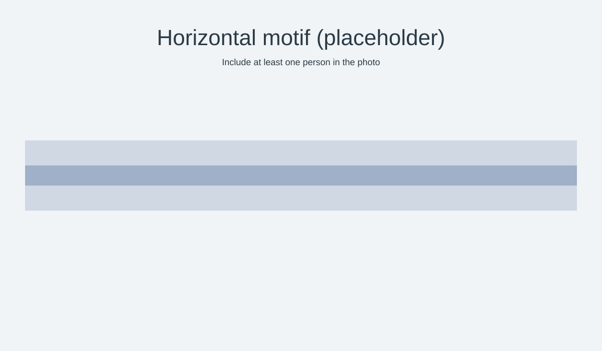
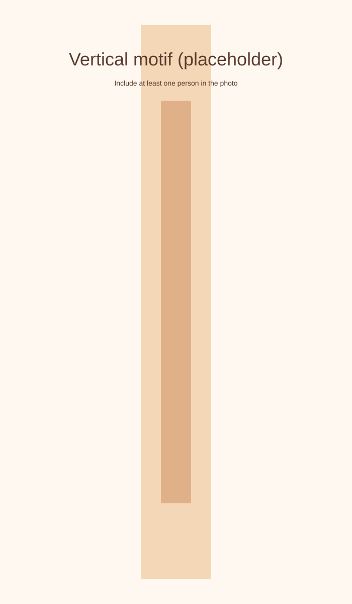
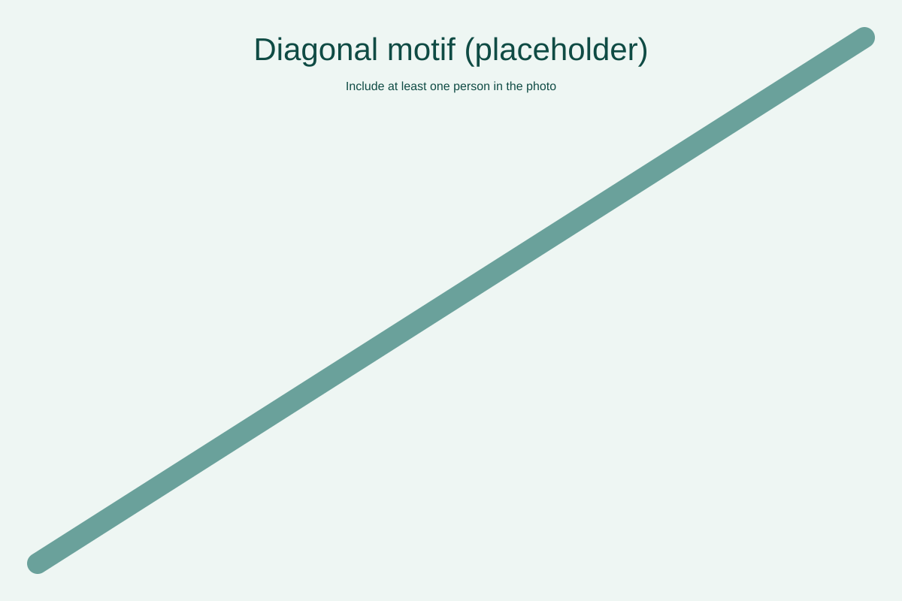
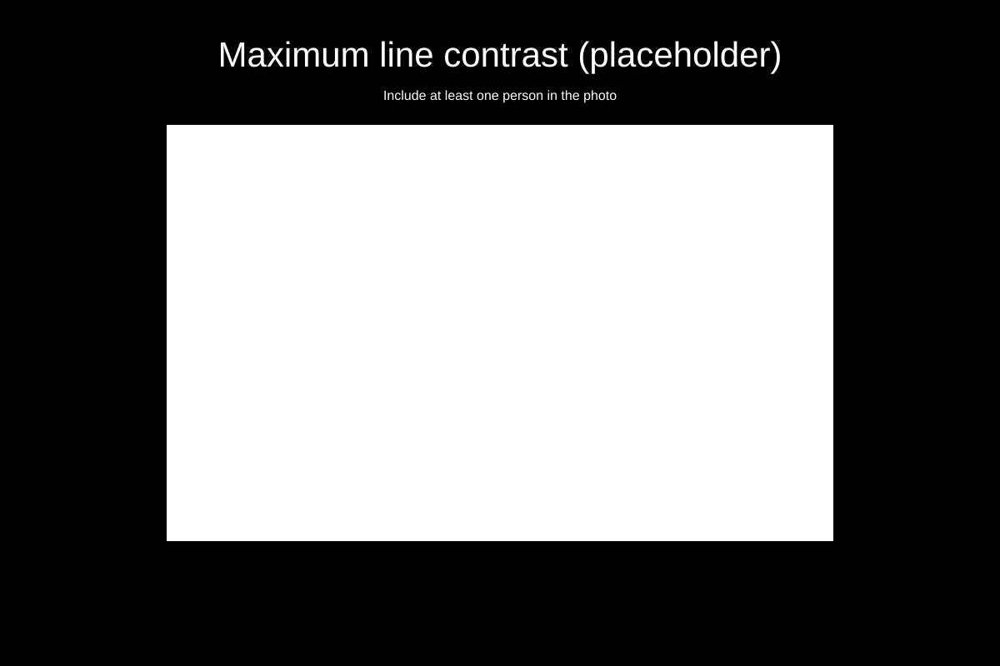
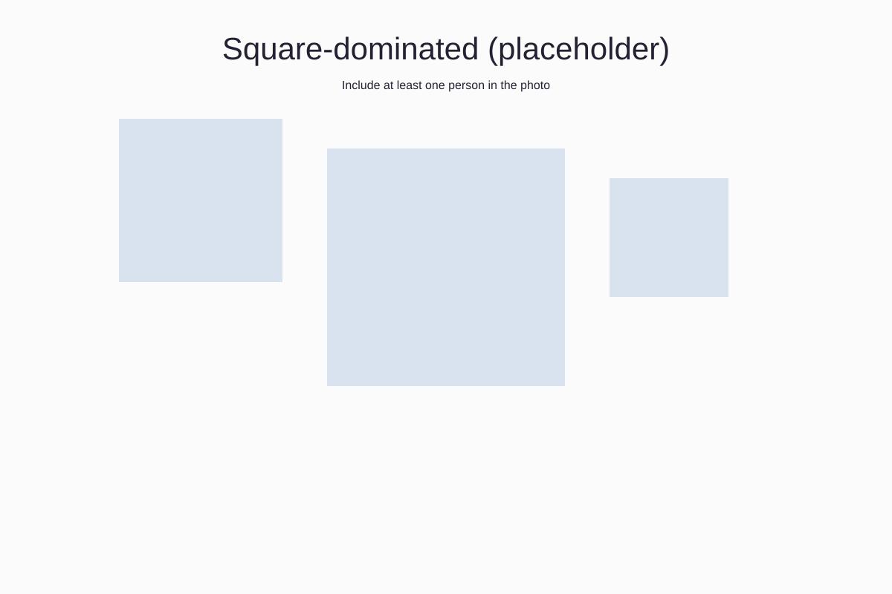
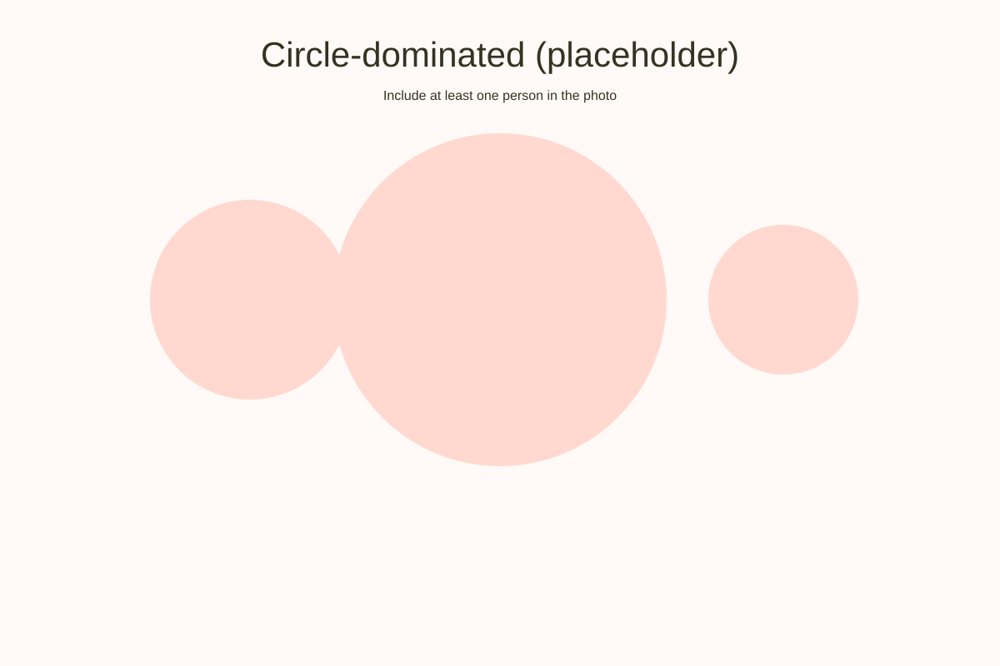
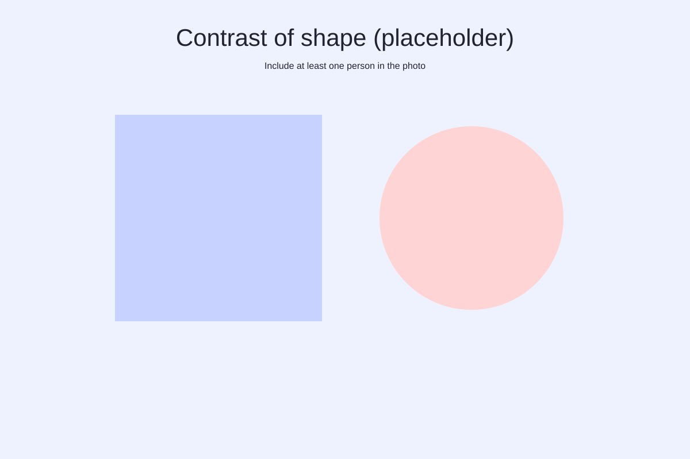

Response 4 - Assignment: Line and Shape
This page contains seven standalone image slots (placeholders). Replace each placeholder with an original photo that includes at least one person. Present images in the order below and label them.
1. Horizontal linear motif

2. Vertical linear motif

3. Diagonal linear motif

4. Maximum contrast of line within the shot

5. Dominated by square(s)

6. Dominated by circle(s)

7. Contrast of shape within the shot (or pair)
Either one image showing shape contrast or a pair comparing shots.

Submission notes
Replace placeholders with your original photos (unique images only). Add short captions explaining how each image demonstrates the required motif or shape and confirm a person appears in the frame. Publish the page and share the direct link for submission.